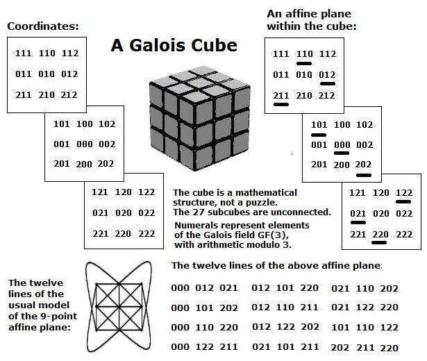
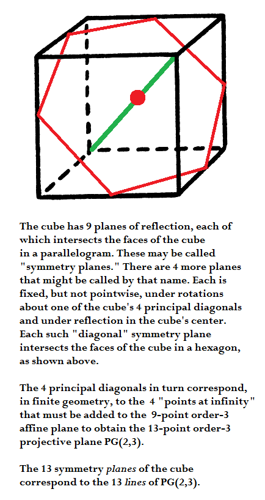

"The cube has…13 axes of
symmetry:
6 C2 (axes joining
midpoints of opposite edges),
4 C3 (space diagonals), and
3C4 (axes joining opposite
face centroids)."
–Wolfram MathWorld article
on
the
cube
These 13 symmetry axes can
be used to illustrate the
interplay
between Euclidean and Galois
geometry in a cubic model
of the 13-point Galois projective plane.
The
13 symmetry axes
of the (Euclidean)
cube --
exactly one axis for each pair of opposite
subcubes in the (Galois) 3×3×3 cube below --
The geometer's 3
×3×3
cube --
27 separate subcubes unconnected
by any Rubik-like mechanism --

A closely
related structure --
the finite projective plane
with 13 points and 13 lines --
The 13 lines
of the Galois
projective plane
may be derived from 13 Galois affine planes
through the Galois cube's center.
(One such plane is illustrated above.)
These 13 Galois affine
planes may in turn be derived from 13
Euclidean planes
through
the Euclidean
cube's center point
perpendicular to the 13 Euclidean
axes of symmetry.
A later version
of the
13-point plane
by Ed Pegg Jr.–
A group action
on the
3×3×3
cube
as illustrated by a
Wolfram program
by Ed Pegg Jr. (undated, but closely
related to a
March 26, 1985 note
by Steven H. Cullinane)–
See also Ed Pegg
Jr. on finite geometry
at the Mathematical Association of America--
|
The Fano Plane
by Ed Pegg Jr.,
“One thing in the Fano plane that
bothered me
for years (for years,
I say) is that it had a circle – and it was described as a line. For
me, a line was a straight line, and I didn’t trust curved or wriggly
lines. This distrust kept me away from understanding projective planes,
designs, and finite geometries for a awhile (for years).”
|
The moral of the story --
Galois
projective geometries can be
viewed
in the context of the larger affine geometries
from which they are derived.
A summary of the story --
The standard definition of points in a Galois projective plane is that they are lines through the (arbitrarily chosen) origin in a corresponding affine 3-space converted to a vector 3-space.
If we choose the origin as the center cube in coordinatizing the 3×3×3 cube (See Weyl's relativity problem), then the cube's 13 axes of symmetry can, if the other 26 cubes have properly (Weyl's "objectively") chosen coordinates, illustrate nicely the 13 projective points derived from the 27 affine points in the cube model.
The 13 lines
of the resulting Galois
projective plane may be derived from Euclidean planes
through
the cube's center point perpendicular to the 13 axes of symmetry.
The above standard definition of points in a Galois projective plane may of course also be used in a simpler structure– the eightfold cube.
(The eightfold cube also allows a less standard way to picture projective points that is related to the symmetries of "diamond" patterns formed by group actions on graphic designs.)
Update of January 13, 2013
Summary of how the cube's 13 symmetry planes* are related to
the finite projective plane of order 3, with 13 points and 13 lines--

* This is not the standard terminology. Most sources count only the 9 planes
fixed pointwise under reflections as "symmetry planes." This of course
obscures the connection with finite geometry.